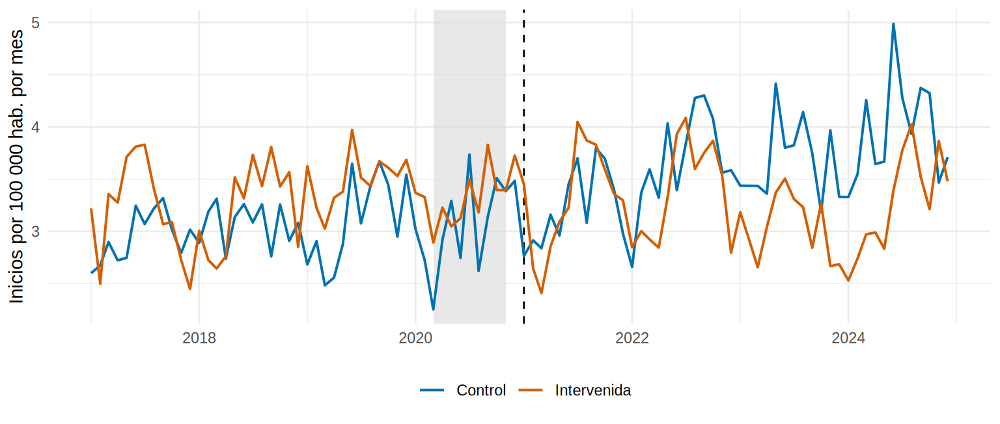
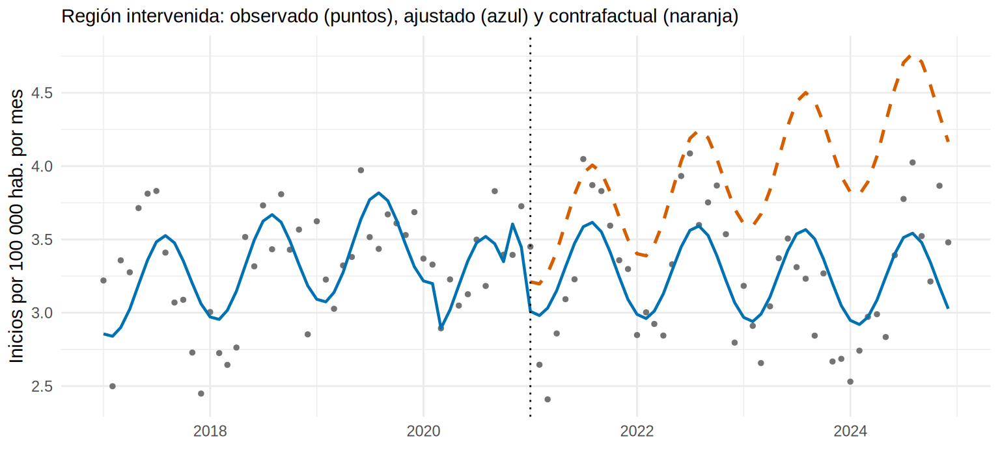
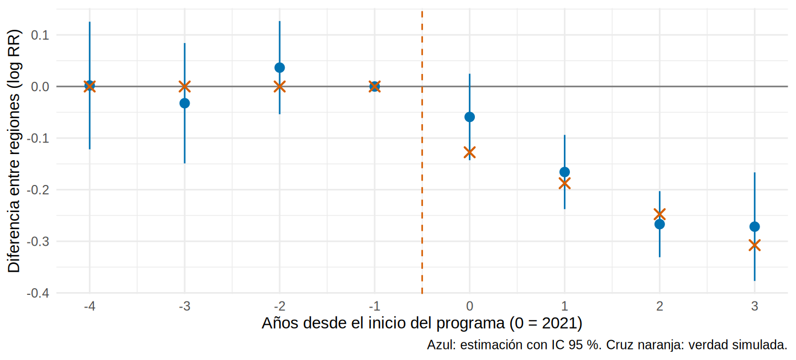

library(tidyverse)
library(sandwich)
library(lmtest)
source("R/funciones_extra_cap15.R")
serie <- read_csv("Bases/serie_inicio_dialisis.csv", show_col_types = FALSE)
oraculo <- read_csv("Bases/serie_inicio_dialisis_oraculo.csv", show_col_types = FALSE) # la verdad (datos simulados)
d <- serie |>
preparar_serie() |>
mutate(interv = as.integer(region == "Intervenida"), # 1 = región con programa
i_post = interv * post, # "estar en la región intervenida Y después del programa"
i_tpost = interv * t_post) |> # lo mismo para la pendiente
arrange(region, mes_num)Series con grupo control: diferencias en diferencias y ITS controlada
Nota🩺 Escenario
Presentas tu ITS del programa de detección temprana y el jefe de epidemiología objeta: «Entre 2020 y 2021 pasaron muchas cosas: la pandemia, cambios en el seguro, nuevos criterios de registro… ¿Cómo sabes que la mejoría se debe a tu programa y no a lo que cambió en todo el país?». Tienes un argumento mejor que “porque lo modelé”: una región vecina sin programa, con sus propios 96 meses de datos. Si algo pasó en todo el país, también le pasó a ella.
Lo que vamos a hacer
- Comparar la región con programa y la región control antes y después: diferencias en diferencias.
- Estimar una ITS controlada (nivel y pendiente) y obtener casos evitados.
- Verificar el supuesto de tendencias paralelas: pruebas, estudio de eventos y placebo.
- Ver cómo falla un mal control y qué protege un buen control.
Paso 1. Las dos series
ggplot(d, aes(fecha, tasa, colour = region)) +
annotate("rect", xmin = as.Date("2020-03-01"), xmax = as.Date("2020-10-31"), ymin = -Inf, ymax = Inf, fill = "grey85", alpha = 0.6) +
geom_vline(xintercept = as.Date("2021-01-01"), linetype = "dashed") +
geom_line(linewidth = 0.7) +
scale_colour_manual(values = c(Intervenida = "#D55E00", Control = "#0072B2"), name = NULL) +
labs(x = NULL, y = "Inicios por 100 000 hab. por mes") +
theme_minimal(base_size = 11) + theme(legend.position = "bottom")
Qué vemos. Hasta el programa, las dos regiones suben y bajan juntas, con la misma estacionalidad y la misma caída en la ola COVID (banda gris), aunque a distinto nivel (la intervenida es algo más grande y con una tasa más alta). Después de enero de 2021, la región control sigue subiendo y la intervenida se aplana. Esa diferencia, y no el nivel de cada región, es lo que nos interesa.
Paso 2. Diferencias en diferencias (DiD), a mano
La lógica es una resta de restas. Para cada región calculas cuánto cambió la tasa entre el periodo anterior y el posterior; el efecto del programa es la diferencia entre esos dos cambios.
tab <- d |>
group_by(region, periodo = ifelse(post == 1, "despues", "antes")) |>
summarise(tasa = sum(casos) / sum(poblacion) * 1e5, .groups = "drop") |> # tasa del periodo (casos / persona-mes)
pivot_wider(names_from = periodo, values_from = tasa) |>
mutate(razon_cambio = despues / antes) # cuánto se multiplicó la tasa
tab |> mutate(across(where(is.numeric), \(x) round(x, 3)))# A tibble: 2 × 4
region antes despues razon_cambio
<chr> <dbl> <dbl> <dbl>
1 Control 3.05 3.63 1.19
2 Intervenida 3.32 3.26 0.981did_razon <- tab$razon_cambio[tab$region == "Intervenida"] / tab$razon_cambio[tab$region == "Control"]La tasa de la región intervenida se multiplicó por 0.98 entre los dos periodos; la de la control, por 1.19. El cociente, 0.82, es la razón de razones (la versión multiplicativa de “diferencia en diferencias”): la intervenida tuvo un 18 % menos de tasa que la que habría tenido si hubiera evolucionado como la control.
Esto se lee como un efecto causal bajo un supuesto, el de las tendencias paralelas: sin el programa, la región intervenida habría cambiado, en proporción, lo mismo que la control. No exige que las regiones sean iguales (sus niveles pueden diferir), sino que su evolución sea comparable. Cualquier choque que afecte a las dos (pandemia, cambios nacionales de registro) se cancela en la resta.
Paso 3. DiD con regresión: precisión y ajustes
El cálculo a mano no da intervalos ni controla la estacionalidad ni el crecimiento de la población. Una regresión de Poisson con offset sí. El coeficiente clave es la interacción i_post = región intervenida × periodo posterior:
m_did <- glm(casos ~ interv + post + i_post + tiempo + s1 + c1 + ola_covid + offset(log(poblacion)),
family = quasipoisson, data = d)
# Errores robustos a autocorrelación DENTRO de cada región (Newey-West por serie, "panel")
V_did <- vcovPL(m_did, cluster = d$region, order.by = d$mes_num, lag = "NW1987")
ct <- coeftest(m_did, vcov = V_did)["i_post", ]
c(RR = unname(exp(ct[1])), inf = unname(exp(ct[1] - 1.96 * ct[2])), sup = unname(exp(ct[1] + 1.96 * ct[2]))) |> round(3) RR inf sup
0.823 0.764 0.886 Qué vemos. El RR de la interacción es 0.82: en promedio durante los 48 meses, la tasa de la intervenida fue un 18 % menor que la esperada con la evolución de la control. Es un promedio de un efecto que crece con el tiempo, y por eso la cifra es mayor que el efecto del primer mes. La verdad (el efecto medio de los 48 meses) es de RR = 0.80. Aquí post (la región control) captura el cambio común de después de 2021, y vcovPL() (de sandwich) corrige los errores estándar por la autocorrelación dentro de cada serie.
Paso 4. ITS con grupo control: nivel y pendiente
El DiD resume en un número un efecto que cambia en el tiempo. La ITS controlada conserva lo bueno del ITS (nivel y pendiente) y le suma el control: a los términos del programa en la región control (post, t_post: lo que cambió “en el país”) se añaden los de la interacción con la región intervenida (i_post, i_tpost: lo que cambió de más en la región con programa).
\[ \ln E(Y_{rt}) = \ln(\text{pob}_{rt}) + \beta_0 + \beta_1\,\text{interv}_r + \beta_2\,\text{tiempo}_t + \beta_3\,\text{post}_t + \beta_4\,\text{t\_post}_t + \underbrace{\beta_5\,\text{interv}_r \cdot \text{post}_t + \beta_6\,\text{interv}_r\cdot\text{t\_post}_t}_{\text{efecto del programa}} + \dots \]
m_cits <- glm(casos ~ interv + tiempo + post + t_post + i_post + i_tpost + s1 + c1 + ola_covid + offset(log(poblacion)),
family = quasipoisson, data = d)
V_cits <- vcovPL(m_cits, cluster = d$region, order.by = d$mes_num, lag = "NW1987")
coeftest(m_cits, vcov = V_cits)[c("post", "t_post", "i_post", "i_tpost"), ] |> round(4) Estimate Std. Error z value Pr(>|z|)
post -0.0418 0.0423 -0.9876 0.3234
t_post 0.0015 0.0013 1.1995 0.2303
i_post -0.0646 0.0469 -1.3754 0.1690
i_tpost -0.0054 0.0018 -3.0510 0.0023-
postyt_post: lo que cambió en la región control tras enero de 2021 (nivel -0.042, pendiente 0.0015; no hay evidencia de cambios: no pasó nada especial en la control). -
i_post: cambio de nivel adicional por el programa: RR = 0.94 (la verdad es 0.90). -
i_tpost: cambio de pendiente adicional: RR = 0.9946 por mes (la verdad es 0.995), con p = 0.002.
Y el efecto a los \(k\) meses, ahora con la incertidumbre robusta, junto a la verdad y a lo que había dado el ITS sin control (15.3):
m_its <- glm(casos ~ tiempo + s1 + c1 + ola_covid + post + t_post + offset(log(poblacion)),
family = quasipoisson, data = filter(d, interv == 1)) # el ITS de 15.3
map_dfr(c(0, 12, 24, 47), \(k) {
r <- comb_lineal(m_cits, c(i_post = 1, i_tpost = k), vcov. = V_cits)
tibble(meses_despues = k, RR_ITS_controlada = r["estimado"], inf = r["inf"], sup = r["sup"],
RR_ITS_sin_control = exp(coef(m_its)["post"] + k * coef(m_its)["t_post"]),
RR_verdad = exp(-0.10 - 0.005 * k))
}) |> mutate(across(where(is.numeric), \(x) round(x, 3)))# A tibble: 4 × 6
meses_despues RR_ITS_controlada inf sup RR_ITS_sin_control RR_verdad
<dbl> <dbl> <dbl> <dbl> <dbl> <dbl>
1 0 0.937 0.855 1.03 0.901 0.905
2 12 0.878 0.823 0.938 0.859 0.852
3 24 0.823 0.775 0.874 0.818 0.803
4 47 0.727 0.651 0.811 0.747 0.715Qué vemos. Las dos versiones se parecen (en esta serie no hubo choques comunes después de 2021) y ambas contienen a la verdad, pero la ITS controlada tiene dos virtudes: es robusta a lo que le pase a todo el país y tiene intervalos honestos (HAC por serie). Para ver por qué importa, imagina que la serie hubiera tenido un choque común.
¿Y si hubiera un choque común? (un experimento hipotético)
Supón que en enero de 2021 se cambia la definición nacional de «inicio de diálisis» (se empieza a registrar como inicio a los pacientes que llegan con catéter de urgencia) y los conteos suben un 12 % en las dos regiones. Lo simulamos multiplicando los conteos posteriores por 1.12 en ambas:
set.seed(321)
d_choque <- d |> mutate(casos = ifelse(post == 1, rpois(n(), casos * 1.12), casos)) # el cambio de registro afecta a todos
f_its <- casos ~ tiempo + s1 + c1 + ola_covid + post + t_post + offset(log(poblacion))
f_cits <- casos ~ interv + tiempo + post + t_post + i_post + i_tpost + s1 + c1 + ola_covid + offset(log(poblacion))
its_c <- glm(f_its, family = quasipoisson, data = filter(d_choque, interv == 1)) # solo la región con programa
cits_c <- glm(f_cits, family = quasipoisson, data = d_choque) # con control
tibble(analisis = c("ITS sin control", "ITS con control", "Verdad"),
RR_nivel = c(exp(coef(its_c)["post"]), exp(coef(cits_c)["i_post"]), 0.905),
RR_pend_mes = c(exp(coef(its_c)["t_post"]), exp(coef(cits_c)["i_tpost"]), 0.995)) |>
mutate(across(where(is.numeric), \(x) round(x, 3)))# A tibble: 3 × 3
analisis RR_nivel RR_pend_mes
<chr> <dbl> <dbl>
1 ITS sin control 0.995 0.997
2 ITS con control 0.906 0.996
3 Verdad 0.905 0.995Qué vemos. La ITS sin control estima un RR de nivel de 0.99: el aumento artificial del registro tapó casi todo el efecto real (0.905), y concluirías que el programa no hizo nada. La ITS con control vuelve a 0.91 porque la región control también “sufrió” el cambio de registro (post ahora captura el +12 %) y se resta. Ese es el valor de un buen grupo control: protege contra la historia, la amenaza más importante de un ITS.
Paso 5. Los casos evitados y el contrafactual
Igual que en 15.3, el contrafactual es el modelo sin los términos del programa (i_post = 0, i_tpost = 0); lo que se queda (post, t_post) es el cambio común:
sin_programa <- d |> mutate(i_post = 0, i_tpost = 0)
i_post_idx <- which(d$interv == 1 & d$post == 1)
d <- d |> mutate(cf = predict(m_cits, sin_programa, type = "response") / poblacion * 1e5,
ajustada = predict(m_cits, type = "response") / poblacion * 1e5)
ggplot(filter(d, interv == 1), aes(fecha)) +
geom_point(aes(y = tasa), colour = "grey45", size = 1) +
geom_line(aes(y = ajustada), colour = "#0072B2", linewidth = 0.8) +
geom_line(data = filter(d, interv == 1, post == 1), aes(y = cf), colour = "#D55E00", linetype = "dashed", linewidth = 0.9) +
geom_vline(xintercept = as.Date("2021-01-01"), linetype = "dotted") +
labs(x = NULL, y = "Inicios por 100 000 hab. por mes",
subtitle = "Región intervenida: observado (puntos), ajustado (azul) y contrafactual (naranja)") +
theme_minimal(base_size = 11)
obs_post <- sum(d$casos[i_post_idx])
cf_post <- sum(predict(m_cits, sin_programa, type = "response")[i_post_idx])
set.seed(15)
B <- MASS::mvrnorm(5000, coef(m_cits), V_cits) # coeficientes plausibles, con varianza robusta
X0 <- model.matrix(~ interv + tiempo + post + t_post + i_post + i_tpost + s1 + c1 + ola_covid, sin_programa)[i_post_idx, ]
evitados_sim <- apply(B, 1, \(b) sum(exp(X0 %*% b + log(d$poblacion[i_post_idx]))) - obs_post)
verdad_evitados <- sum(filter(oraculo, region == "Intervenida", mes_num >= 49)$mu_contrafactual) -
sum(filter(oraculo, region == "Intervenida", mes_num >= 49)$mu_esperado)
c(observados = obs_post, esperados_sin_programa = cf_post, evitados = cf_post - obs_post,
inf = unname(quantile(evitados_sim, 0.025)), sup = unname(quantile(evitados_sim, 0.975)), verdad = verdad_evitados) |> round() observados esperados_sin_programa evitados
8047 9781 1734
inf sup verdad
1239 2255 1955 Qué vemos. Se evitaron unos 1734 inicios de diálisis (IC 95 %: 1239 a 2255); la verdad simulada es 1955. El intervalo del ITS sin control (15.3) era más ancho y salía de una sola serie; aquí usa la información de la región control para estimar mejor lo que habría pasado.
Paso 6. ¿Son paralelas las tendencias? Tres comprobaciones
El supuesto de tendencias paralelas no se puede demostrar, pero sí se puede hacer plausible o refutar. Las tres revisiones habituales:
(a) Tendencias previas. ¿Evolucionaban distinto las dos regiones antes del programa? Es una interacción región × tiempo usando solo los meses previos:
Estimate Std. Error t value Pr(>|t|)
0.0000 0.0014 0.0004 0.9997 La diferencia de pendiente previa es de 0.0000 por mes (p = 1.00): prácticamente cero.
(b) Estudio de eventos (event study). En lugar de un solo “antes/después”, estimamos la diferencia entre regiones año por año respecto del último año previo (2020). Si las tendencias eran paralelas, los coeficientes de los años previos deben rondar 0; los posteriores muestran cuándo aparece el efecto:
d <- d |> mutate(anio_rel = floor((mes_num - 49) / 12)) # años desde el programa: -4, -3, -2, -1, 0, 1, 2, 3
d$anio_f <- relevel(factor(d$anio_rel), ref = "-1") # referencia: el último año previo (2020)
m_ev <- glm(casos ~ interv + anio_f + s1 + c1 + interv:anio_f + offset(log(poblacion)), family = quasipoisson, data = d)
V_ev <- vcovPL(m_ev, cluster = d$region, order.by = d$mes_num, lag = "NW1987")
nm <- grep("^interv:anio_f", names(coef(m_ev)), value = TRUE)
ev <- tibble(anio_rel = as.integer(sub("interv:anio_f", "", nm)), b = coef(m_ev)[nm], ee = sqrt(diag(V_ev))[nm]) |>
bind_rows(tibble(anio_rel = -1, b = 0, ee = 0)) |> # el año de referencia vale 0 por construcción
left_join(oraculo |> filter(region == "Intervenida") |> mutate(anio_rel = floor((mes_num - 49) / 12)) |>
group_by(anio_rel) |> summarise(verdad = mean(log(mu_esperado / mu_contrafactual))), by = "anio_rel")
ggplot(ev, aes(anio_rel, b)) +
geom_hline(yintercept = 0, colour = "grey50") +
geom_vline(xintercept = -0.5, linetype = "dashed", colour = "#D55E00") +
geom_pointrange(aes(ymin = b - 1.96 * ee, ymax = b + 1.96 * ee), colour = "#0072B2") +
geom_point(aes(y = verdad), shape = 4, size = 2.5, colour = "#D55E00", stroke = 1) +
scale_x_continuous(breaks = -4:3) +
labs(x = "Años desde el inicio del programa (0 = 2021)", y = "Diferencia entre regiones (log RR)",
caption = "Azul: estimación con IC 95 %. Cruz naranja: verdad simulada.") +
theme_minimal(base_size = 11)
Qué vemos. Los coeficientes previos (años −4 a −2) están cerca de 0 y sus intervalos incluyen el cero: no hay señal de tendencias distintas. Los posteriores descienden: aproximadamente 6 % el primer año, 15 % el segundo, 23 % el tercero y 24 % el cuarto, siguiendo la verdad (cruces). Es la imagen que muchos revisores piden para un diseño con control.
(c) Placebo en el tiempo. Finge que el programa empezó en el mes 25 (en pleno periodo previo) y analiza solo los datos previos. No debería haber efecto. Como el nivel y la pendiente se compensan entre sí (están muy correlacionados), no se miran por separado: se evalúa el efecto combinado al final del periodo previo, 23 meses después del “inicio” falso:
previo <- d |> filter(post == 0) |>
mutate(post_f = as.integer(mes_num >= 25), tp_f = pmax(0, mes_num - 25), i_post_f = interv * post_f, i_tp_f = interv * tp_f)
m_plac <- glm(casos ~ interv + tiempo + post_f + tp_f + i_post_f + i_tp_f + s1 + c1 + ola_covid + offset(log(poblacion)),
family = quasipoisson, data = previo)
V_plac <- vcovPL(m_plac, cluster = previo$region, order.by = previo$mes_num, lag = "NW1987")
comb_lineal(m_plac, c(i_post_f = 1, i_tp_f = 23), vcov. = V_plac) |> round(3) # RR "placebo" en el mes 48estimado inf sup
0.969 0.881 1.066 El efecto placebo acumulado es un RR de 0.97 (IC 95 %: 0.88 a 1.07): el intervalo incluye el 1, es decir, no hay efecto placebo. Compáralo con el programa real, cuyo efecto a los 24 meses fue un RR de 0.82. (Con solo 24 meses a cada lado el placebo tiene poca potencia; si “encontrara” un efecto claro, sospecharías que tu control no es comparable.)
Paso 7. Cuando el control es malo
Todo lo anterior depende del control. Para ver qué ocurre con uno mal elegido, creamos un control inventado cuyo riesgo crece más rápido que el de la intervenida (+0.6 % mensual más) aun antes del programa:
set.seed(99)
d_malo <- d |> mutate(casos = ifelse(interv == 0, rpois(n(), casos * exp(0.006 * tiempo)), casos)) # el control crece más rápido
# (1) DiD ingenuo, que supone tendencias paralelas
m_did_malo <- glm(casos ~ interv + post + i_post + tiempo + s1 + c1 + ola_covid + offset(log(poblacion)),
family = quasipoisson, data = d_malo)
# (2) La prueba de tendencias previas
m_pre_malo <- glm(casos ~ interv * tiempo + s1 + c1 + ola_covid + offset(log(poblacion)),
family = quasipoisson, data = filter(d_malo, post == 0))
c(DiD_RR = unname(exp(coef(m_did_malo)["i_post"])),
verdad_RR = unname(exp(verdad_prom$m)),
pendiente_previa = unname(coef(m_pre_malo)["interv:tiempo"]),
p_pendiente_previa = unname(summary(m_pre_malo)$coef["interv:tiempo", 4])) |> round(4) DiD_RR verdad_RR pendiente_previa p_pendiente_previa
0.5930 0.8045 -0.0049 0.0015 Qué vemos. Con el mal control, el DiD ingenuo da un RR de 0.59 (¡un 40 % de reducción!) cuando la verdad es 0.80: el efecto parece enorme solo porque el control crecía más rápido por su cuenta. La prueba de tendencias previas lo delata: la intervenida crece -0.0049 por mes menos que el control antes de cualquier programa (p = 0.0015). Con una diferencia lineal como esta, se puede permitir que cada región tenga su propia tendencia (interv:tiempo en la ITS controlada); es el último paso del ejemplo:
Estimate Std. Error t value Pr(>|t|)
i_post -0.1332 0.0636 -2.0933 0.0377
i_tpost -0.0063 0.0023 -2.7215 0.0071Con tendencias propias, i_post y i_tpost vuelven a valores cercanos a la verdad (nivel 0.88 frente a 0.90; pendiente 0.9938 frente a 0.995), con la contrapartida de la precisión: los errores estándar crecen, y se asume que las tendencias previas se pueden extrapolar linealmente, un supuesto más. Cuando la diferencia de tendencias no es lineal o el control no se parece en nada a la intervenida, la salida honesta es buscar otro control o usar otros diseños (control sintético, regresión discontinua o variables instrumentales; Cap. 19).
Advertencia⚠️ Lo que el grupo control no resuelve
- Un control “a la medida”. Elegir el control después de ver los datos (la región que “mejor” calza) inflaría los falsos positivos. Define el control antes y por razones clínicas y administrativas (misma población de referencia, mismo sistema de registro).
- Tendencias paralelas: se contrasta, no se prueba. Que las pretendencias coincidan es necesario para creer el resultado, no suficiente: un cambio que solo afecte a la región intervenida en 2021 (otro programa local, un nuevo hospital) seguirá confundido con el efecto.
- Contaminación: si el programa también influye en la región control (traslado de pacientes, difusión de la guía), el efecto se subestima.
Importante🎯 En resumen
- Un grupo control convierte un ITS (frágil ante la “historia”) en un diseño mucho más creíble: lo que le pasa a todos se resta.
- La diferencia en diferencias compara el cambio de la región con programa con el cambio de la control; supone tendencias paralelas (sin programa, habrían cambiado lo mismo, en proporción).
- La ITS controlada estima, con la interacción región × (
post,t_post), el cambio adicional de nivel y de pendiente por el programa; usa errores robustos por serie (vcovPL()). - Verifica las tendencias paralelas con la pretendencia, el estudio de eventos y el placebo en el tiempo.
- Un mal control produce sesgos grandes y creíbles; la pretendencia los delata. Elige el control antes de mirar el desenlace.
Ejercicio
- Repite el DiD con regresión (
m_did) sin la variableola_covid. ¿Cambia el RR de la interacción? ¿Por qué cambia poco, a diferencia de lo que pasaba en el ITS sin control (15.3)? - En el estudio de eventos, usa como referencia el primer año previo en lugar del último. ¿Cambian las conclusiones? ¿Qué pasa con los coeficientes?
- Ejecuta el experimento del choque común con un aumento del 25 % y con una disminución del 10 %. ¿Recupera la ITS controlada siempre el efecto? ¿Y la ITS sin control?